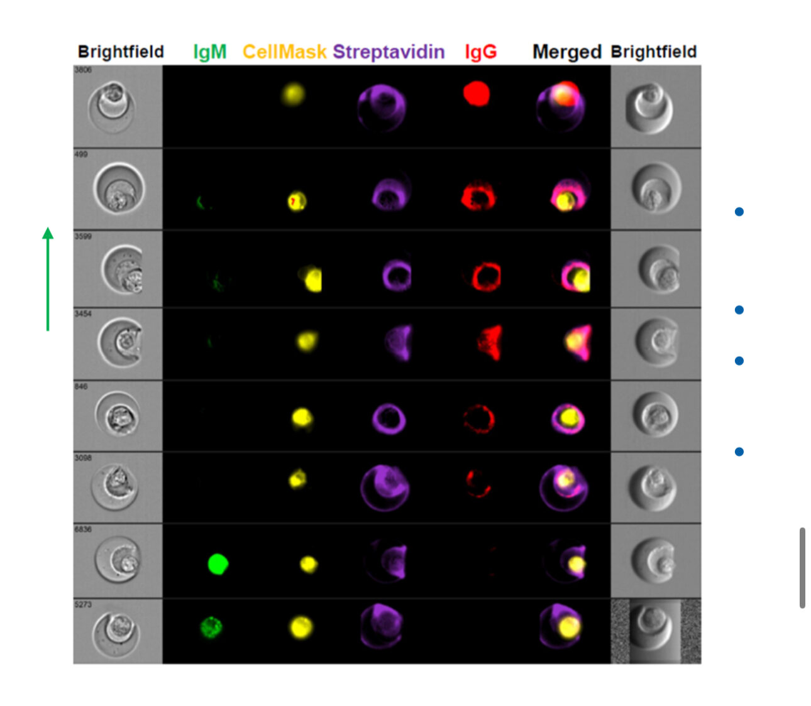
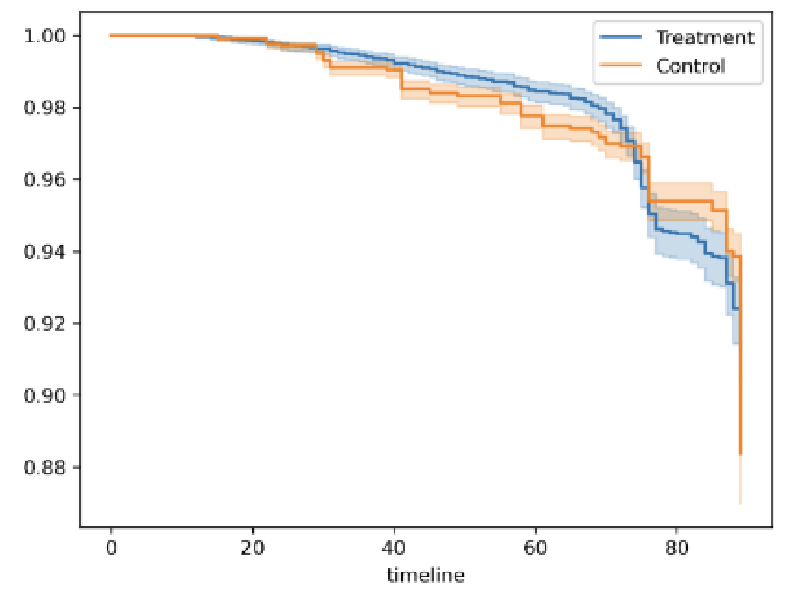

Research Projects

University of Wisconsin–Madison
Wound-healing pathways
Investigating the role of the Arp2/3 complex in single-cell wound repair.

Novartis Biomedical Research
Nanovial technology workflow
Developing an efficient workflow to isolate antigen-specific antibody-producing B cells.

University of Medicine & Pharmacy HCMC
Hypertension treatment outcomes
Evaluating treatment effectiveness and uncertainty using statistical analysis in R.